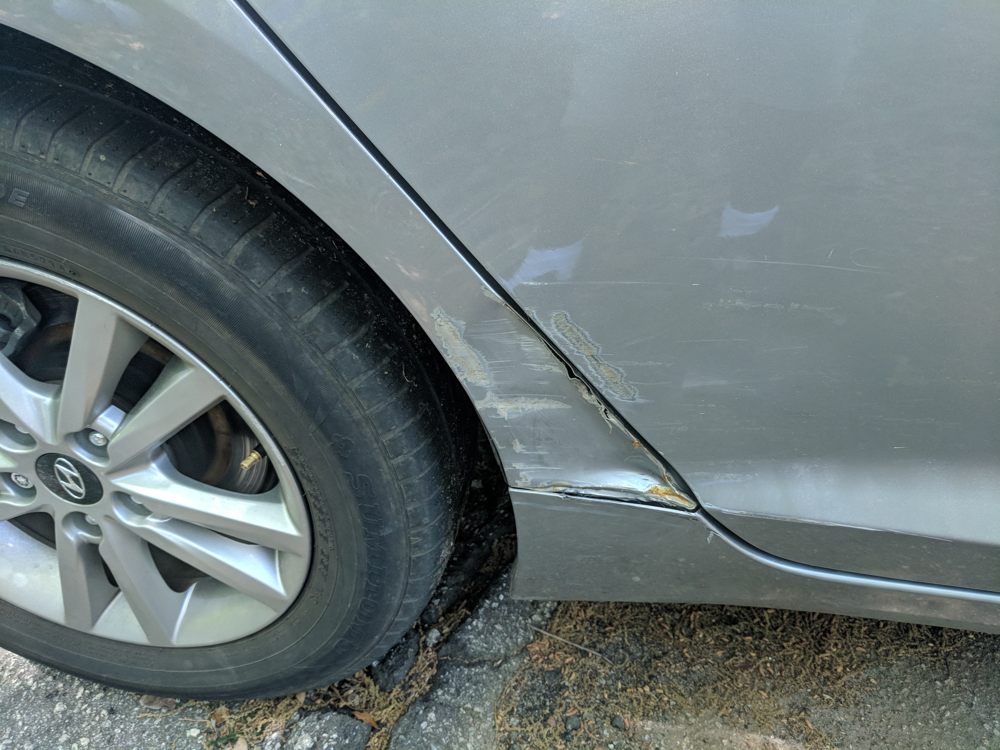

That Small Dent Will Cost You More Later — Here's Why

It's just a little door ding. Barely noticeable. You'll get to it eventually, right? Here's the problem: in Upstate South Carolina's humidity, "eventually" is how a $200 fix becomes a $900 repair.
Paint is your car's raincoat
That thin layer of paint and clear coat is the only thing between your car's steel panels and the air. Once a dent or scratch cracks through to bare metal, moisture gets in — and South Carolina serves plenty of it. Surface rust can start in weeks. Once rust bubbles under the paint, the repair jumps from a simple dent fix to cutting, welding, or panel replacement.
The math of waiting
- Today: a paintless dent repair or spot touch-up, often $150–$400, done in a day.
- Six months from now: rust has spread under the paint. Now it's grind, treat, fill, prime, and refinish the whole panel — $500–$900.
- A year or more: rust-through. The panel may need replacing entirely. You're into four figures.
Resale value takes the hit too
Dealers and private buyers read dents like a report card. A car with a handful of "small" dings appraises noticeably lower than the same car with straight panels. Fixing dents before you sell or trade in usually pays for itself several times over.
What we can do with a small dent
If the paint is intact, paintless dent repair massages the metal back from behind — no filler, no repaint, factory finish preserved. If the paint is cracked, we repair and refinish just the damaged area, blending it so it disappears. Either way, it's a same-week turnaround at our Taylors shop.
Got a ding you've been ignoring? Send us a photo or swing by 221 West Main Street for a free estimate. Future you — the one not paying for rust repair — says thanks.
Need this fixed? Get a free estimate.
Bring your car by the shop or send us photos — we'll tell you exactly what it'll take.
Call (864) 475-1057221 West Main Street, Taylors, SC · Mon–Fri 9–5, Sat 9–12